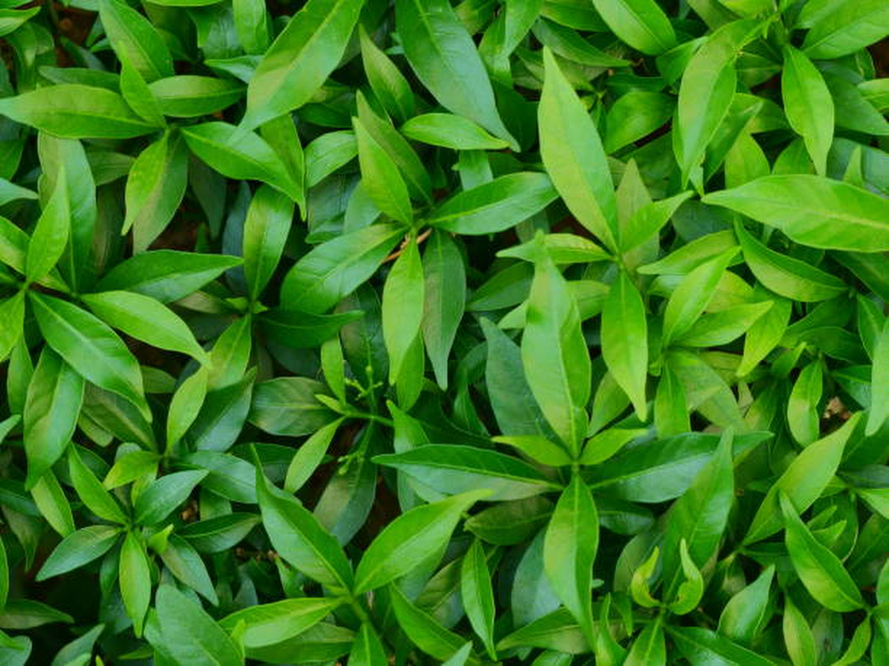

Tea leaves disease

Tea is an important economic crop. It contains a variety of effective ingredients required by the human body, has medical and health care functions, and is quite effective in enhancing human immunity. Planting tea is an important way for tea farmers to make their fortunes. Currently, China’s tea planting area and output are the highest in the world. However,because of the effects of many diseases, such as tea algae leaf spot (TALS), tea bud blight (TBB), tea white scab (TWS), and tea leaf blight (TLB), the annual tea production has been reduced by as much as 20%1. Tea leaf diseases can also reduce the quality of tea and cause serious economic losses to tea farmers. Accurate detection and identiication of tea leaf diseases and timely prevention and control measures are of great significance to reduce the loss of tea production, improve the quality of tea, and increase the income of tea farmers.
Tea leaf diseases can be identified by observing the leaves condition like color and spots on the leaves. Strange spots & colors on the leaves may be an indication of disease. Experts and farmers can identify the type of disease by observing the leaves manually.
At present, the diagnosis of tea leaf diseases relies on the manual method. Most tea trees grow in rugged mountainous areas. Thus, it is time-consuming and costly for experts to go to the tea garden for diagnosis. However, results are largely subjective when famers rely on their own experience to distinguish the types of tea diseases.
To overcome the above problem we are building a model which is used for the prevention and early detection of tea leaves disease. Basically tea leaves disease diagnosis depends on the different characteristics like color, spots, texture etc. Here the person can capture the images of the tea leaves and then the image will be sent to the trained model. The model analyzes the image and detects whether the tea leaves are having any disease or not and its type.
VGG16 is a convolutional neural network architecture used for image classification tasks. It was developed by Oxford University and is known for its deep architecture and high accuracy on image recognition benchmarks.
NumPy is a Python library that provides support for large, multi-dimensional arrays and matrices, along with a large collection of high-level mathematical functions to operate on these arrays.
PyTorch is an open-source machine learning library based on the Torch library. It is primarily used for developing deep learning models and offers a dynamic computational graph that allows for easy experimentation and debugging.
Torchvision is a computer vision library in Python that is part of the PyTorch ecosystem. It provides a set of tools and datasets for building and training computer vision models.